COOK CLUB
Hello! Last June (2025), I decided to start a cooking club with my friends as a way to stay connected as we all live apart now. From previous experience of running a club in university I know how easy it is for action to fizzle so I really wanted to structure this group activity in a way that everyone could stay engaged for a long period of time.
How it works is that each month, one person would be randomly picked to choose a recipe and the rest of us would all cook it remotely. If someone missed cooking, they would have to send a chair emoji in our more public group chat, and everyone was required to react with the lightning emoji to “electric chair” then. Very intense right haha!!
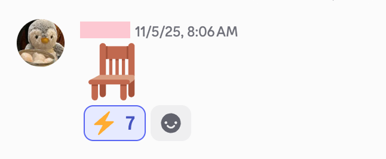
And to make things more memorable and increase emotional investment, at the end I wanted everyone to work together to create a monthly graphic spread that could then be printed out into a full magazine.
This cook club opened up so many concepts for me, so I wanted to write out this blog post to break down some of the more interesting things I did to think about this cook club from different aspects- both creatively and technically!
HUEHUEBOT
Early in the first month, I spent time thinking about how to manage the social dynamics of running this club with a large friend group without coming across as naggy. While I was doing most of the organizing, I still wanted a more participant-oriented image. To do this, I decided to use a Discord bot to act as a more neutral authority. Because there were frequent announcements to make, the bot handled tasks like selecting the recipe picker of the month and announcing everyone’s choices. Having these responsibilities managed by a bot made the process feel more official and consistent, while also removing the pressure of communication from any one person.
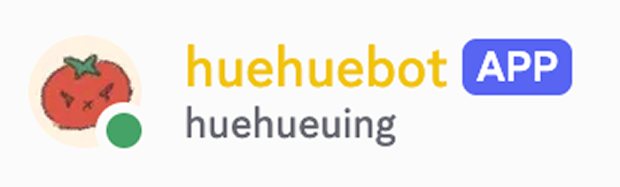
It actually ended up being pretty straightforward to write the code for this bot on a private server, as the Discord API clearly defined how the command handlers should be structured. I ended up coding the main recipe picker commands, as well as a few extra ones that I thought might be useful: /help, /random number, /rock paper scissors (two users can play rock paper scissors synchronously), /announce recipe picker (input a list of users to select from and randomly choose one), and /announce recipe (which includes an optional link parameter).
Lastly, I also added a few Easter eggs using fuzzy string matching like this:
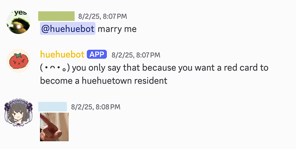
However, once I finished coding, I realized there was one major thing I had overlooked: the bot could only run if I was running the program on my computer. This wasn’t ideal, so I looked online for 24/7 code runners, but many of the free options wouldn’t allow me to upload environment variables separately, which I felt was a safety concern (always practice secure coding guys!).
This led me to consider using a Raspberry Pi to run the Python bot, since it’s not very energy-intensive. I didn’t have a Raspberry Pi on hand, but I did have an unopened NVIDIA Jetson, a little overkill haha. Still, I managed to upload my code and get it running. This also ended up not being an ideal solution, since I noticed that the Jetson tends to get hot easily. Even though it has its own thermal throttling, I think that if anyone wants to attempt this, it’s worth considering a cooling fan. Unfortunately, my main workaround is to try not to leave the Discord bot running for long periods of time, so I don’t come home to a burnt-down house one day.
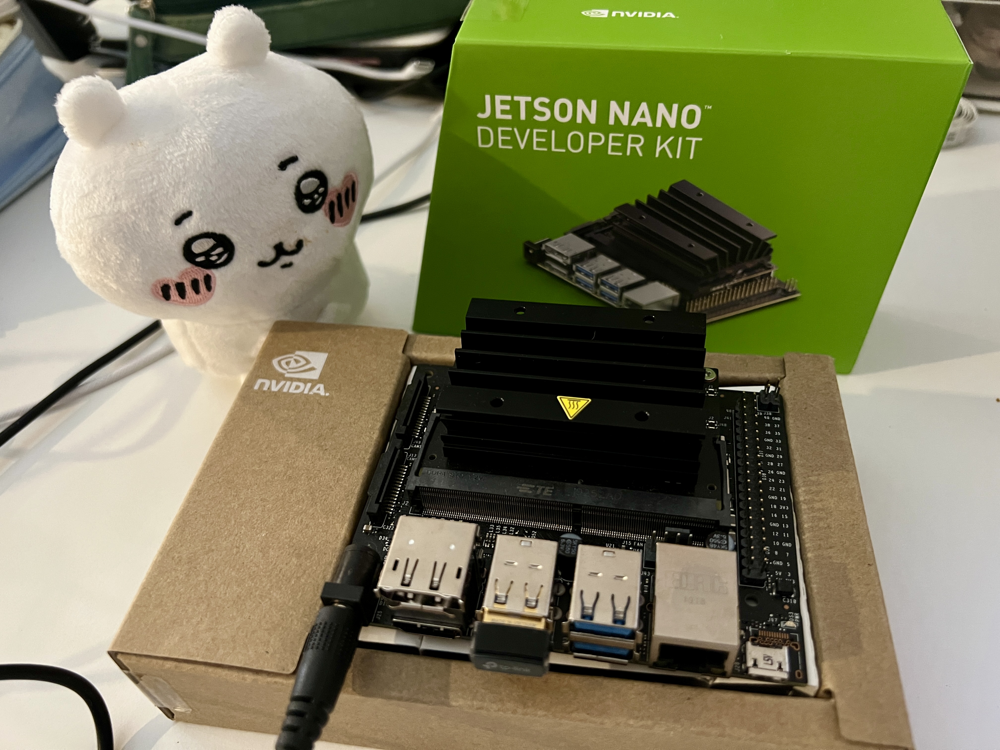
CC MAGAZINE
As we started putting together the monthly graphic designs, I realized that nine pages of content felt a bit thin. More importantly, the magazine felt like it was missing the actual members who made up the club. While food photos are important, I felt documenting each other and our friendship is actually the main point of why we were doing all of this. And so, I asked each member to contribute a page and thought about content to add that could foster cross collaboration.
As for the overall concept of the cover, I wanted to capture something that felt nonchalantly cool, a bit chaotic, and youthful. We shot it with flash to recreate a more nostalgic, unpolished, and casual atmosphere. Thinking back on this decision, I think it’s because in the 2000’s it often felt like people were documenting the sporadic moment rather than the polished curated feel most images have today.
The key feature of this picture is the four different pairs of shoes with everything on the ground. Cutting our pizza, made with bok choy, Chinese sausage, scallions, and shiitake, on the ground (don’t worry, there is a plate) was meant to reference informality and youth. This ended up being one of my favorite pictures we took. I liked the variety of shoes, the focus on the food, and the way 2D elements were integrated created a bridge between 2D and 3D. Also, quick comment, Adobe Photoshop’s generative expand, magic heal, and subject select are crazy good! It only took a few clicks to get everything the way I wanted it to look. I highly recommend using it!
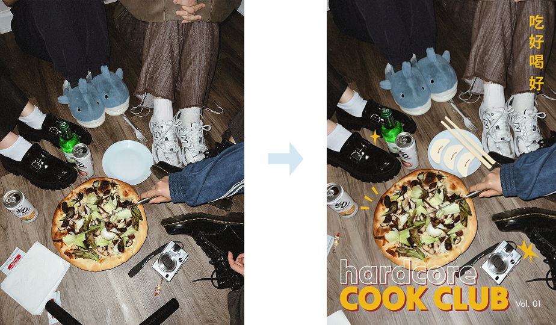
Lastly, I want to highlight the back cover. As someone who is Chinese American, I was drawn to the idea of using fortune cookie slips and a Chinese takeout receipt, as both signal that something has come to a close. In this case, it became a way to summarize everything we cooked throughout the month.
Each fortune cookie slip on the page is customized and representative of a member. From knowing my friends and thinking about the conversations we shared, I chose fortunes that felt true to what they want or are working toward. As their friend, this page is a way of expressing my hope that those wishes come true.
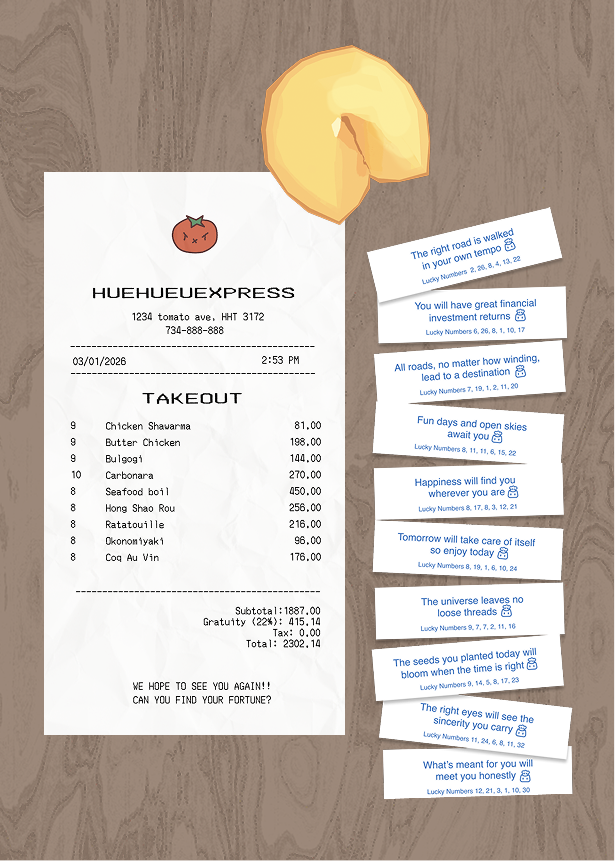
I originally wanted this to be an AR interactive page, where scanning a QR code would let you tap and break the fortune cookie. Unfortunately, Niantic is shutting down 8th Wall, and even though the experience was already built, I didn’t want it to expire within a year. Still, at least here, I want to show off the fortune cookie I texture painted and animated by recreating techniques used in Cookie Run Kingdom!
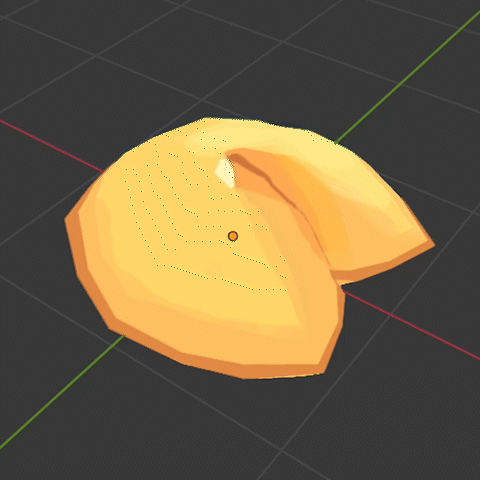
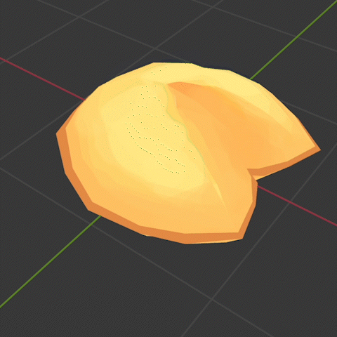
Overall for me, these monthly graphics were a great way to explore different design patterns and study how graphics are made. Beyond typography choices, I started noticing how many layouts rely on consistent grids, repeated spacing, and visual hierarchy to create structure. It was really cool to recognize these patterns and understand how much intention goes into making layouts feel cohesive.
CC INTRO VIDEO
One of the core ideas behind this project was increasing the interactivity of the magazine. I had already included QR codes and interactive articles, but I wanted to introduce something more unique that had some wow factor!
I was first introduced to NFC tags at AWE, and the idea of tapping a physical sticker that linked to something digital really stuck with me. I wanted to apply that same principle to the magazine cover, allowing readers to interact with it by simply tapping their phone and accessing an additional layer of digital content. For the embedded content, I definitely wanted a video to help establish the main tone of the magazine which in my opinion was youth, friendship, and continuity around shared experiences. The cooking club's main structure is based on cooking the same recipe, reacting to each other's results and sharing memories of our lives that come from it.
Because everyone in the cooking club is Chinese or Chinese American, the script and voiceover are in Chinese. With the help of two other members, we wrote a heartfelt script, below being the English translation:
Every flavor is connected to a shadow of the past. A bowl of noodles recalls an evening from one’s youth; A sip of soup brings back the memory of a loved one. In our cooking corner, we come to understand that cooking is never only about eating. It connects us to past places, past relationships, and moments that continue to stay with us. Some flavors return like a familiar song, one you haven’t heard in years, but still recognize immediately. Others fade more slowly, remaining in memory long after.
I’m incredibly thankful to the member who filmed and gathered clips for the video, whom I asked to take this on because of his photography background, as well as to the friend who recorded the voiceover. Their contributions helped keep the tone simple and grounded, and the piece became an awesome collaborative effort to coordinate!
COOKING EMILEE!
In June, one member suggested making extra video content, and I thought it would be fun to try! After brainstorming, the idea I liked the most was recreating my own version of Cooking Mama. As a kid, it was probably one of my most played games, and when I started examining its design, I was surprised to discover extensive libraries of documented assets from old Nintendo DS games. These resources gave me a really helpful reference for how my video should look, complete with all of the SFX.
Surprisingly, this video took a lot more effort than I anticipated. Aside from using Aesprite to redraw myself as Mama, other assets documented were sometimes incomplete or low quality which made me spend extra time trying to clean them up.
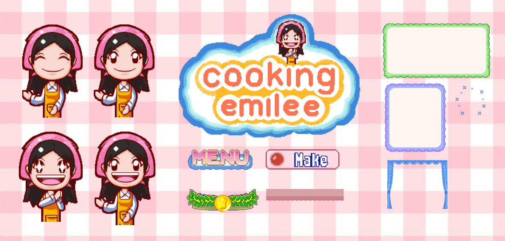
Getting lighting right and trying to capture everything in one take was much harder than it looks. Because my kitchen is ugly I ended up having to film on a low table near the window as well as wrap my around the tripod to get a clean shot of my hands cooking. I really have a new found appreciation for food content creators! Please check out the video I worked hard on below:
CHEF CAT AND THE SAJA BOYS
As part of creating some extra video content for July, I wanted something that would only take me a few hours to make. Honestly, there’s not much to say about this one. It’s meant to be silly and straightforward, and just an overall reflection of how trendy K-Pop Demon Hunters was during that time. The storyline is: the chef cat is making this month’s Butter Chicken, the Saja boys show up trying to steal its soul, and the cat fights them off and then completes the cooking. Please turn off your brain and watch it!
PPAP
The Wednesday before I left for New Year’s, I stumbled across a Chinese PPAP rap remix with heavy 2000s-inspired outfits and visuals. The song itself was interesting, but gosh, the visuals really brought everything together, from the choice of clothing to the editing. The rapper looked so cool! Looking closely at the original video, it was mostly a white background with some clever editing, which made it feel achievable. After this evaluation, I was pretty determined to try replicating the style with the original PPAP song as it’s such an iconic song from ten years ago with ties to food.
Furthermore, I thought it would be fun to surprise the other cook club members and use some extra pictures for a new page in the magazine, which would help shift the focus to people rather than just food. While waiting for my flight, I started drawing up a draft video and contacting the club members who were in Michigan over winter break, explaining my idea and asking about their availability.
When recreating the early-2000s look, I had two options: 1) use an actual 2000s digicam, or 2) shoot high-quality footage and post-process. After testing my dad’s old Canon Powershot S95, I decided to go with the DJI pocket 4K resolution option. The main factor was that although the battery life was long for the PowerShot, the camera tended to overheat after long usage which wasn’t ideal. And this proved to be the correct choice as it gave me a lot more flexibility in post, letting me control grain, motion blur, and color degradation. It was super satisfying to see my draft come to life when I was putting everything together in Premiere.
As for the video effects, for the pen and pineapple, I ended up finding free models online, rendering them out in Blender. One thing I actually overlooked was the pineapple landing in the first shots. If I could redo it, I’d make it more dynamic as it currently lacks depth and just looks like a PNG dropped in. A bit of movement would have made it feel more real.
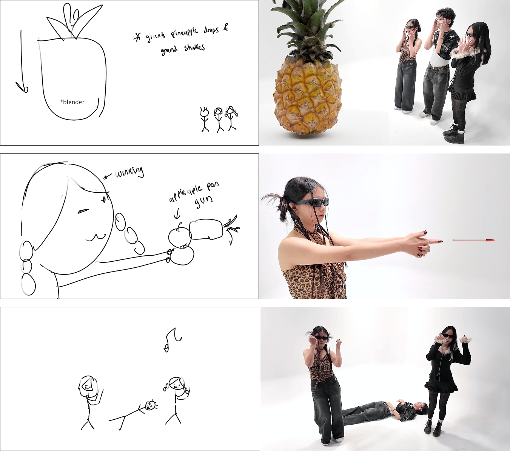
All in all, the part I found the hardest was how quickly we had to move. Since I would only be back for two weeks, we had to find availability, decide styling and buy all of our clothing, consider holiday shipping, finalize the video planning, and book a studio.
Huge thanks to my friends for being such good sports that day! We spent about three hours driving from place to place, filming the entire time, and I had so much fun. I’m not getting any younger (I’m hitting my mid-twenties!!!), and it’s really nice to have photos and videos to look back on.
CC MEMBER INTRO VIDEO
I felt like everything was pretty much coming together for the cooking club magazine, but one thing I thought was lacking was all of us being visually together. With ten people, it’s pretty much impossible for everyone to be in the same place at the same time, so I started thinking of using a video as a way to bridge that gap: 1) to make the group feel more connected during our last cooking stretch, and 2) to express how grateful I am for everyone working on this large project with me.
The visual idea for the video started forming when I came across a video by Korean artist Dolman called HELLO⁂SODADADA. I was immediately drawn to its bright, cheerful energy and the idea of characters dancing in front of food. I especially loved the concept of each person representing an ingredient, which helped the storyline come together pretty naturally.
The video follows the start of a new month, with a new recipe announced by Huehuebot. From there, we go grocery shopping in the beautiful oceanside town we all live in. Each character represents an ingredient, with their hair color and styling reflecting their personality. The choreography is broken into short sections during the grocery shopping phase, and afterward, we cook together. I really wanted the video to end in a way that emphasized our friendship and the feeling of us as a group.
As for the dance, I referenced a video by パオパオチャンネル, where they danced to “KOI” by Gen Hoshino—a video I first watched almost nine years ago. I remember thinking the choreography was so cool and wishing I could someday make something like it. It’s pretty cool that I finally got to follow through on that thought almost a decade later.
One key difference from HELLO⁂SODADADA was that I knew it was impossible for me to fully animate and illustrate everything myself, especially since my illustration skills aren’t that strong, and doing this for ten characters would’ve been kind of crazy. Instead, I wanted to use 3D models.
Since I started self-teaching Blender about four years ago, I’ve mostly stayed in the modeling and texturing phase. Rigging and animation were always the parts I avoided. I just never sat down and properly learned them. In past projects, we usually defaulted to Adobe Mixamo, which sometimes caused meshes to deform in strange ways and we were forced to accept it or work around it. This time, though, I felt like it was finally time to learn these processes for real, especially since they turned out to be less intimidating than I had built them up to be in my head. However, this process ended up taking way longer than I expected. I originally thought it would take about two months, but it probably took closer to four.
Working on this project pushed me to think about Blender in a much more technical way than I had before. Because I was working with so many characters, I used a shared base mesh to keep things manageable, adjusting proportions as needed for each model. I also relied on Rigify’s base humanoid rig, which simplified parts of the process, but the low-poly nature of my meshes made me much more aware of the rig’s limitations once animation was involved.
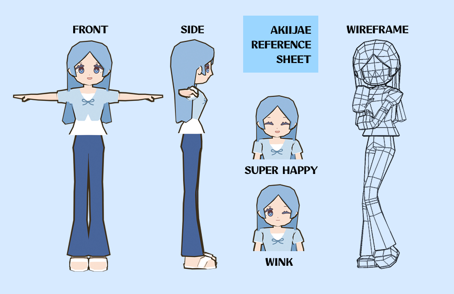
Topology became way more important than I expected. I had to pay close attention to edge flow around joints like the shoulders, elbows, and hips, and I found that adding and adjusting loop cuts made a noticeable difference in how cleanly the mesh deformed during movement. Weight painting was easily the most time-consuming (and frustrating) part of the process, and I couldn’t rely entirely on automatic transfers. The weight painting visualization tool ended up being incredibly helpful for understanding how each bone affected the mesh, especially when troubleshooting issues like shoulder deformation during arm lifts.
For animation, I think the best way is to work in short sections rather than trying to tackle everything at once. Blocking out key poses first and then refining smaller movements, transitions, and timing made the choreography feel much more manageable. Managing everything in a single Blender file also forced me to stay organized. For example it was a lot more importnat for me to use collections, shared assets, and consistent naming to keep the scene from becoming overwhelming. In regard to animation, one of the cooler techniques I ended up using was UV texture animation! I really liked how it helped a flat, illustrated aesthetic similar to the visual style of games like Animal Crossing where it's based on texture-driven expression changes rather than geometric facial deformation!!
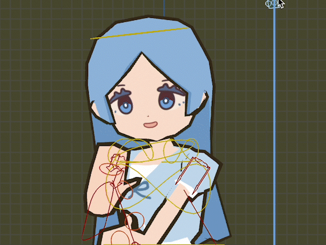
And the node material setup in case anyone is curious:
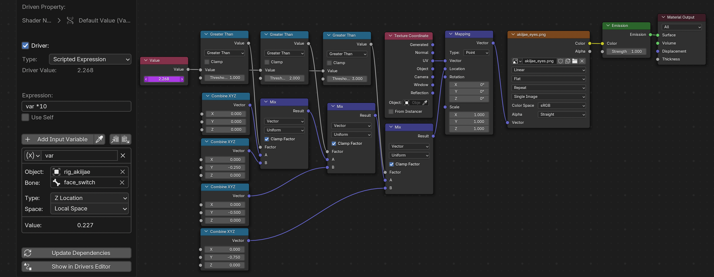
I also highly recommend not drawing directly in Blender. Exporting textures to Procreate and re-importing them into Blender proved far more effective than painting directly in-program, especially for preserving resolution and organic line quality.
Looking back, there are definitely areas I’d want to refine further, especially around weight painting and joint behavior. I didn’t have time to add twist bones this time, but this whole project made me much more interested in how joint structure, loop cuts, and topology work together to create smoother rotations. Overall, this project made animation feel far less intimidating and gave me a clearer understanding of how these systems in Blender connect. Moving forward, I’d really like to try creating a high-poly model and fully rigging it myself sometime this year, since I think it would be really beneficial for my technical understanding of Blender!
Please watch the video below!
PACKING AND MAILING
Now the final most fun part of the whole club! Bringing everything together and mailing it to everyone! It was quite a lot fo work to fold boxes, pack contents, and mail the magazines to everyone.
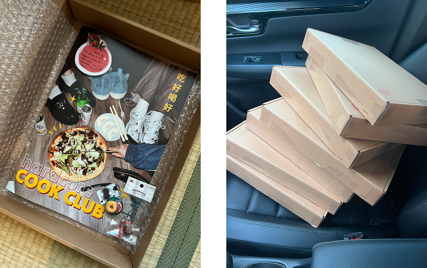
FINAL THOUGHTS
I’m really happy with how everything turned out. Collaborating with different friends in the club felt especially meaningful, as it allowed everyone’s individual strengths to come through while giving the project real depth. More than anything, it gave us a reason to stay connected with something to work on, talk about, and return to together. I think that is essential to maintaining and strengthening friendships especially in adulthood.
Gosh, this was such a long article!! I hope it was interesting to see how I tried to pull different concepts for a cohesive and varied experience! 💛
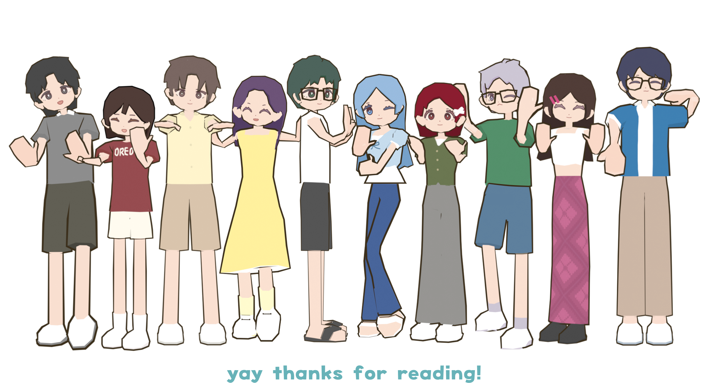